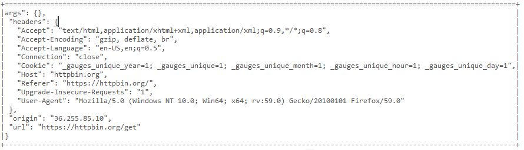
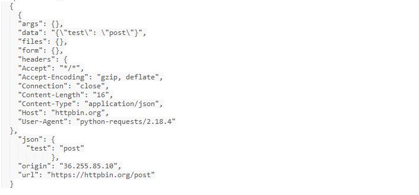

Usage¶
Writing unit test cases for REST API’s (No authentication):
No authentication¶
Step-1: Importing pyRest_lib
from rest_lib import pyRest_lib
Step-2: Writing the setUp method:
def setUp(self):
self.rest = pyRest_lib.PyRestLib(url='https://httpbin.org')
self.log = self.rest.get_logObj()
self.json = self.rest.get_jsonObj()
- Creating object for PyRestLib class and passing URL as parameter.
- Getting logger & Json object
Step-3: Writing unittests for GET,POST,PUT,DELETE requests. send_request single method for sending GET/POST/PUT/DELETE request types.
GET Request example:
| GET Request | Parameters |
|---|---|
| https://httpbin.org/get |
| Response Data |
|  |
Unittest for sending above request and verifing Host value from response:
def test_get_request(self):
response = self.rest.send_request('/get',method_name='GET')
response_code = response['code']
response_data = response['data']
verify_host = self.json.get_key_value(response_data,'Host')
response_headers = response['headers']
self.assertEqual(response_code,200)
self.assertEqual(verify_host,'httpbin.org')
- Passing path and request method type as passing parameters to send_request.
- return object response contains response data,code and headers and that can be accessed by response[‘data’],response[‘code’] & response[‘headers’].
- Passing response data and key to get_key_value method to get value.
- Asserting response status code & data.
- POST Request example:
- Sample POST request & response.
HTTP POST Request:
| GET Request | Parameters |
|---|---|
| https://httpbin.org/post | {‘test’:’post’} |
| Response Data |
|  |
Code for sending above request:
def test_post_request(self):
data = {'test':'post'} # Step 1
json_data = self.json.dump_json_data(data) # Step 1
response = self.rest.send_request('/post',method_name='POST',
parameters=json_data)
response_code = response['code']
response_data = response['data']
verify_response_data = self.json.get_key_value(response_data,'test')
self.assertEqual(response_code, 200)
self.assertEqual(verify_response_data,'post')``
- Converting python dictionary into JSON data.
- Passing path and request method type as parameters to send_request.
- Response contains response data,code and headers and that can be accessed by response[‘data’],response[‘code’] & response[‘headers’].
- Passing response data and key to get_key_value method to get value.
- Asserting response status code & data.
Same way for PUT & DELETE request PUT Request example:
def test_put_request(self):
response = self.rest.send_request('/put',method_name='PUT')
code = response['code']
self.assertEqual(code, 200)
DELETE Request example:
def test_delete_request(self):
response = self.rest.send_request('/delete',method_name='DELETE')
code = response['code']
self.assertEqual(code, 200)
Writing unit test cases for REST API’s with authentication):
With Authentication¶
Authentications supported HTTPBasicAuth,HTTPDigestAuth and Session
Step 1: Add authentication details in config.yaml file.
url : https://api.github.com Authentication_Type: HTTPBasicAuth HTTPBasicAuth:
username: xxxxxxxxx password: xxxxxxxxx
- HTTPDigestAuth:
- username: null password: null
- Session:
- cookie_header:
- header: ‘sample cookie’
Auth: False username: ‘user’ password: ‘password’
#Make rest_header when you want to send any custom headers headers:
“Content-Type”: “application/json”
url: API test URL Authentication_Type: Authentication type has to be given. Default null. headers: Custom headers has to be added to send in every request. Step 2: Importing pyRest_lib from rest_lib import pyRest_lib
Step 3:
- def setUp(self):
- file = os.path.abspath(‘resources//config.yaml’) # Step 1 self.rest_obj = pyRest_lib.PyRestLib(file_path=file,auth=’HTTPBasicAuth’) # Step 2 self.log = self.rest_obj.get_logObj() # Step 3 self.json = self.rest_obj.get_jsonObj() # Step 3
Getting the config file path location Passing file path to PyRestLib class and authentication type. Getting json and logger object Step 4: Now writing unittests for GET request. GET Sample Request: GET https://api.github.com/user/following Response: Status: 200 OK
- [{
- “login”: “jeevan449”, “id”: 20350885, “avatar_url”: “https://avatars1.githubusercontent.com/u/20350885?v=4”, “gravatar_id”: “”, “url”: “https://api.github.com/users/jeevan449”, “html_url”: “https://github.com/jeevan449”, “followers_url”: “https://api.github.com/users/jeevan449/followers”, “following_url”: “https://api.github.com/users/jeevan449/following{/other_user}”, “gists_url”: “https://api.github.com/users/jeevan449/gists{/gist_id}”, “starred_url”: “https://api.github.com/users/jeevan449/starred{/owner}{/repo}”, “subscriptions_url”: “https://api.github.com/users/jeevan449/subscriptions”, “organizations_url”: “https://api.github.com/users/jeevan449/orgs”, “repos_url”: “https://api.github.com/users/jeevan449/repos”, “events_url”: “https://api.github.com/users/jeevan449/events{/privacy}”, “received_events_url”: “https://api.github.com/users/jeevan449/received_events”, “type”: “User”, “site_admin”: false
}] Unittest for sending GET request and verifying response data & status code .
- def test_get_following(self):
- path = ‘/user/following’ response = self.rest_obj.send_request(path,method_name=’GET’) # Step 1 code = response[‘code’] # Step 2 data = response[‘data’] # Step 2 verify_data = self.json.get_key_value(response_data,’login’) # Step 3 self.assertEqual(verify_data,’jeevan449’) # Step 4 self.assertEqual(code,200) # Step 4
Passing path and method_name to send_request method. Assigning response code and data to variable Parsing login key value from the response data. Verifying response data and code.